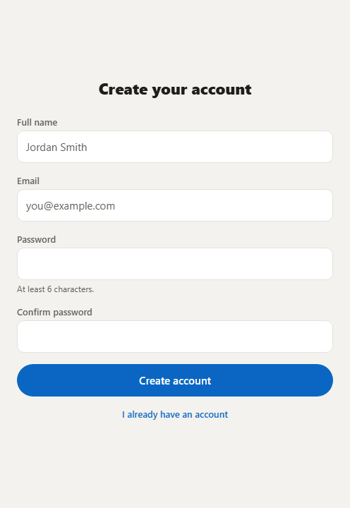
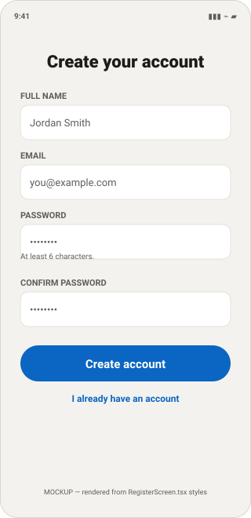
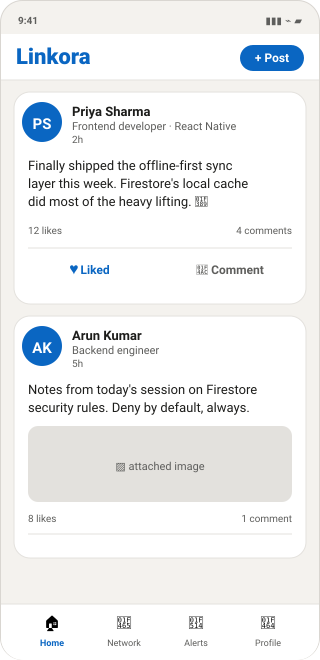
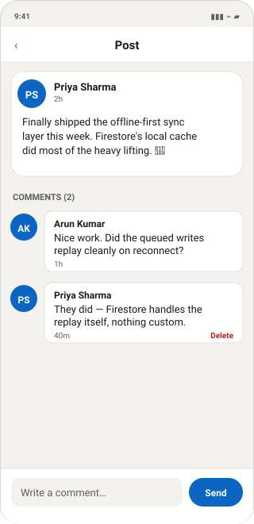
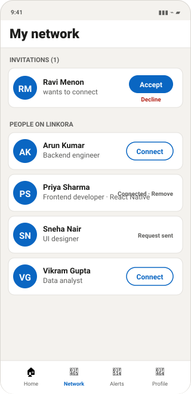
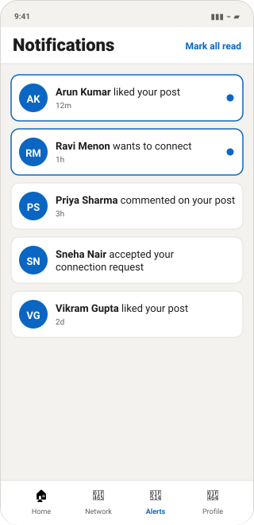
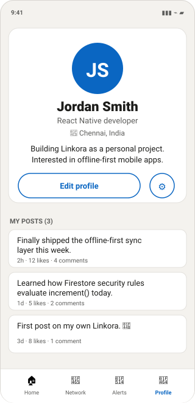
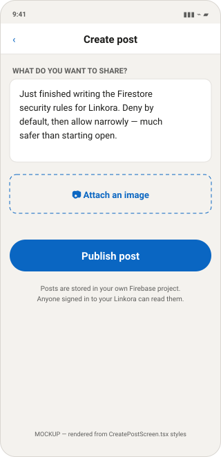
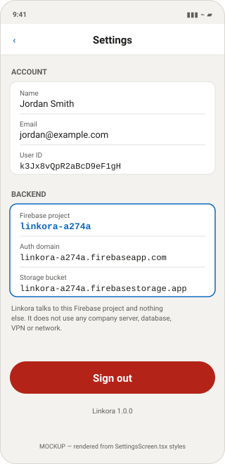

Everything here is taken from code that exists in this project. Features with no code are marked NOT IMPLEMENTED rather than described.
A. Project overview
What Linkora is
Linkora is a professional-networking mobile app. A user registers with an email and password, fills in a profile, posts updates, likes and comments on other people's posts, and sends connection requests. It runs on Android and iOS from one codebase.
Why React Native
- One codebase, two platforms. The same TypeScript runs on Android and iOS.
- Real native UI. React Native renders actual platform widgets, not a web page in a wrapper.
- Expo removes the setup barrier. With Expo you run the app on a real phone through the Expo Go app — no Android Studio, no Xcode, no JDK. That matters here: this development machine has no Java and no Android SDK installed, and the app still runs.
Why Firebase
- No server to write or host. Linkora has no Node/Express backend. The app talks straight to Google's services over HTTPS.
- Authentication is solved. Passwords are hashed and stored by Google. Linkora never sees or stores a password.
- Realtime by default. Firestore listeners push changes to the app, so the feed updates without a refresh button.
- Security lives on the server. Firestore rules run on Google's machines, so they cannot be bypassed by editing the app.
How the frontend and backend communicate
There is no REST API and no custom endpoint. Screens call functions in
src/services/; those functions call the Firebase SDK; the SDK makes the HTTPS request.
The single file that opens any connection is src/firebase/app.ts.
src/services/. Those
services import auth, db and storage from
src/firebase/app.ts. So to see every network destination the app can reach, you read
one file.Architecture in layers
| Layer | Folder | Job | May import |
|---|---|---|---|
| UI | src/components/ | Dumb, reusable pieces (Button, Avatar, PostCard) | theme, utils, types |
| Screens | src/screens/ | One screen each; holds screen state | services, context, components |
| Navigation | src/navigation/ | Which screen shows when | screens, context |
| State | src/context/ | Current user + profile, app-wide | services |
| Data | src/services/ | All reads and writes | src/firebase/app.ts |
| Connection | src/firebase/ | Starts Firebase. Only network entry point. | config |
| Config | src/config/ | Reads .env, validates, blocks wrong project | — |
Dependencies point downward only. A service never imports a screen. That is what keeps the data layer testable and the network surface small.
B. Complete folder guide
src/hooks/— the only hook,useAuth, is exported fromsrc/context/AuthContext.tsx.android/andios/— Expo generates these only if you runnpx expo prebuild. Not needed.__tests__/— there is no test runner configured.
What each folder is for
src/firebase/ — the connection
Contains: app.ts only.
Why it exists: to give the whole app exactly one place where a backend connection is
created. Everything else imports auth, db, storage from here.
Depended on by: all seven service files. Nothing else.
src/services/ — all data access
Contains: auth.service.ts, users.service.ts,
posts.service.ts, comments.service.ts, connections.service.ts,
notifications.service.ts, storage.service.ts.
Why it exists: screens should describe what they want, not how Firestore works. If the database changed, only this folder would change.
Depends on: src/firebase/app.ts, src/types/.
Used by: screens and AuthContext.
src/screens/ — one file per screen
10 screens. auth/LoginScreen.tsx and auth/RegisterScreen.tsx are shown
when signed out; the other eight when signed in.
Screens hold their own loading/error state and call services. They never touch Firestore directly.
src/navigation/ — routing
RootNavigator.tsx chooses between signed-out and signed-in.
AuthNavigator.tsx is the login stack. MainTabs.tsx is the four bottom tabs.
types.ts types every route name and its parameters so a typo is a compile error.
src/context/ — app-wide state
AuthContext.tsx holds the Firebase Auth user and the Firestore profile, and
exports the useAuth() hook. Nearly every signed-in screen calls it.
src/config/, src/types/, src/utils/, src/theme/
config/env.ts— reads.env, validates it, and refuses to start on the wrong Firebase project.types/index.ts— TypeScript shapes mirroring the Firestore documents, plus theconnectionIdFor()helper.utils/errors.ts— maps Firebase error codes to readable sentences.utils/format.ts—timeAgo(),initials(),looksLikeEmail().theme/index.ts— colours, spacing, radius, font sizes.
What it looks like — screen to file
Real screenshots — the app actually running
These two are genuine screenshots, captured from the web build with a temporary throwaway Firebase config. The jump from Login to Register was done by an automated click, and the browser console reported zero errors.

AuthContext resolves, React Navigation works, and both auth screens render.
What it does not prove: real sign-in or any Firestore read/write — those need your real
Firebase keys. It is also the web render; a phone uses the same components with native
spacing.Mockups — the remaining screens
src/theme/index.ts and each screen's StyleSheet, so the colours, spacing
and button text match the code. Replace them with real screenshots once you run the app.Use this section to connect what you see on the phone to the file that draws it — that is usually the first thing you need when a question starts with "show me where…".








Which service feeds which screen
| Screen | Draws it | Gets data from |
|---|---|---|
| Login | auth/LoginScreen.tsx | login(), requestPasswordReset() |
| Register | auth/RegisterScreen.tsx | register() |
| Home feed | HomeScreen.tsx | subscribeToFeed(), likePost(), unlikePost() |
| Post & comments | PostDetailScreen.tsx | getPost(), subscribeToComments(), addComment() |
| My network | NetworkScreen.tsx | listOtherUsers(), subscribeToMyConnections() |
| Notifications | NotificationsScreen.tsx | subscribeToNotifications() |
| Profile | ProfileScreen.tsx | useAuth(), subscribeToUserPosts() |
| Create post | CreatePostScreen.tsx | uploadPostImage(), createPost() |
| Settings | SettingsScreen.tsx | useAuth(), firebaseConfig, logout() |
firebaseConfig. If someone asks "how do you know it only talks
to your own backend?", you open Settings on the phone and show them linkora-a274a.Where the colours come from
Every screen imports one token file, which is why the whole app looks consistent:
export const colors = { background: '#F4F2EE', // page behind the cards surface: '#FFFFFF', // cards, headers, tab bar border: '#E3E1DD', // hairlines primary: '#0A66C2', // buttons, links, active tab text: '#1D1D1B', textMuted: '#5E5E5C', danger: '#B42318', // delete, sign out success: '#0E7C3A', } as const;
Change a value here and it changes everywhere. That is the whole point of a token file — there are no hardcoded colour strings scattered through the screens.
C. File-by-file explanation
| File | Purpose | Firebase service |
|---|---|---|
src/config/env.ts | Read + validate env, project tripwire | — |
src/firebase/app.ts | Initialise Firebase | Auth, Firestore, Storage |
src/services/auth.service.ts | Register, login, logout, reset | Auth |
src/services/users.service.ts | Profile CRUD, people list | Firestore |
src/services/posts.service.ts | Feed, create/delete post, likes | Firestore |
src/services/comments.service.ts | Comments | Firestore |
src/services/connections.service.ts | Requests, accept, remove | Firestore |
src/services/notifications.service.ts | In-app notifications | Firestore |
src/services/storage.service.ts | Image upload | Storage |
src/context/AuthContext.tsx | Current user + profile | via services |
src/navigation/RootNavigator.tsx | Signed-in vs signed-out | — |
Firebase configuration and initialisation
Note on naming: many tutorials call this file src/firebase/config.ts. In
Linkora it is src/firebase/app.ts, and the environment reading is split out into
src/config/env.ts.
File 1 — src/config/env.ts
Purpose: read the Firebase settings out of .env, prove they are present and
real, and refuse to run against any project except linkora-a274a.
export const firebaseConfig = { apiKey: required('EXPO_PUBLIC_FIREBASE_API_KEY', process.env.EXPO_PUBLIC_FIREBASE_API_KEY), authDomain: required('EXPO_PUBLIC_FIREBASE_AUTH_DOMAIN', process.env.EXPO_PUBLIC_FIREBASE_AUTH_DOMAIN), projectId: required('EXPO_PUBLIC_FIREBASE_PROJECT_ID', process.env.EXPO_PUBLIC_FIREBASE_PROJECT_ID), storageBucket: required('EXPO_PUBLIC_FIREBASE_STORAGE_BUCKET', process.env.EXPO_PUBLIC_FIREBASE_STORAGE_BUCKET), messagingSenderId: required('EXPO_PUBLIC_FIREBASE_MESSAGING_SENDER_ID', process.env.EXPO_PUBLIC_FIREBASE_MESSAGING_SENDER_ID), appId: required('EXPO_PUBLIC_FIREBASE_APP_ID', process.env.EXPO_PUBLIC_FIREBASE_APP_ID), } as const; export const ALLOWED_FIREBASE_PROJECT_ID = 'linkora-a274a'; export function assertPersonalFirebaseProject(): void { if (firebaseConfig.projectId !== ALLOWED_FIREBASE_PROJECT_ID) { throw new Error('[Linkora] Refusing to start…'); } }
Explanation, piece by piece
| Code | What it does |
|---|---|
process.env.EXPO_PUBLIC_* | Expo replaces this with the literal value from .env when the app is bundled. Only names starting EXPO_PUBLIC_ are exposed. |
required(name, value) | Throws a readable error if the value is missing, empty, or still a your_…_here placeholder. |
ALLOWED_FIREBASE_PROJECT_ID | A hard-coded tripwire. Linkora is personal, so exactly one project is legal. |
assertPersonalFirebaseProject() | Called at import time in app.ts. If .env ever points elsewhere, the app stops instead of silently writing to the wrong database. |
File 2 — src/firebase/app.ts
Purpose: create the three Firebase objects the whole app shares.
// Fail fast if .env points anywhere other than the personal project. assertPersonalFirebaseProject(); export const firebaseApp: FirebaseApp = getApps().length > 0 ? getApp() : initializeApp(firebaseConfig); function createAuth(app: FirebaseApp): Auth { try { const { getReactNativePersistence } = require('firebase/auth'); if (typeof getReactNativePersistence === 'function') { return initializeAuth(app, { persistence: getReactNativePersistence(AsyncStorage), }); } } catch { /* already initialised, or not React Native */ } return getAuth(app); } export const auth: Auth = createAuth(firebaseApp); export const db: Firestore = getFirestore(firebaseApp); export const storage: FirebaseStorage = getStorage(firebaseApp);
| Code | What it does |
|---|---|
initializeApp(firebaseConfig) | Connects the app to the Firebase project. This is the moment Linkora becomes bound to linkora-a274a. |
getApps().length > 0 ? getApp() : … | Metro's fast refresh can re-run this file while you are editing. Calling initializeApp twice throws, so an existing instance is reused. |
initializeAuth(app, { persistence }) | Creates the Auth instance with a storage backend. |
getReactNativePersistence(AsyncStorage) | Tells Firebase to save the login token in the phone's own local storage. Without it the user is signed out every time the app restarts. |
getFirestore(app) | Creates the database handle. Every query in the app starts from this db. |
getStorage(app) | Creates the file-storage handle, used only for images. |
require inside try/catch is deliberate.
getReactNativePersistence exists only in the SDK's React Native build. Under Metro it
resolves; under plain Node (a lint or script run) it does not, and the app falls back to in-memory
auth instead of crashing.Authentication
File that handles authentication: src/services/auth.service.ts.
Email + password only — no company SSO, no LDAP, no Google/Facebook sign-in.
Registration
export async function register(params: { email: string; password: string; displayName: string; }): Promise<User> { const { email, password, displayName } = params; const credential = await createUserWithEmailAndPassword(auth, email.trim(), password); // Set the name on the Auth record so it is available immediately. await updateProfile(credential.user, { displayName: displayName.trim() }); // Then create the Firestore profile the rest of the app reads from. await createUserProfile({ uid: credential.user.uid, email: credential.user.email ?? email.trim(), displayName: displayName.trim(), }); return credential.user; }
Step by step
createUserWithEmailAndPasswordsends the email and password to Firebase Auth. Google hashes and stores the password. Linkora never sees or stores it.updateProfilewrites the display name onto the Auth record.createUserProfile(inusers.service.ts) writes the Firestore document atusers/{uid}with empty headline, bio, location and photo.- Firebase fires
onAuthStateChanged.AuthContextpicks it up andRootNavigatorswaps to the signed-in app. No navigation code runs.
users/{uid} for everything else. The uid is the link between them.Login and logout
export async function login(email: string, password: string): Promise<User> { const credential = await signInWithEmailAndPassword(auth, email.trim(), password); return credential.user; } export async function logout(): Promise<void> { await signOut(auth); } export function subscribeToAuthState(callback: (user: User | null) => void): () => void { return onAuthStateChanged(auth, callback); }
signInWithEmailAndPassword— Firebase verifies the credentials and returns a token, which is written to AsyncStorage by the persistence layer.signOut— clears the stored token.onAuthStateChangedfires withnull, and the UI returns to Login on its own.onAuthStateChanged— the event that drives the whole app. It returns an unsubscribe function, whichAuthContextreturns from itsuseEffectso the listener is closed when the provider unmounts.
How the logged-in user is identified
const [user, setUser] = useState<User | null>(null); const [profile, setProfile] = useState<UserProfile | null>(null); const [initialising, setInitialising] = useState(true); // 1. Watch login / logout useEffect(() => { const unsubscribe = subscribeToAuthState((nextUser) => { setUser(nextUser); setInitialising(false); if (!nextUser) setProfile(null); }); return unsubscribe; }, []); // 2. Watch that user's profile document, live useEffect(() => { if (!user) return; const unsubscribe = subscribeToUserProfile(user.uid, setProfile, (e) => setError(…)); return unsubscribe; }, [user]);
Any screen then does:
const { user, profile } = useAuth(); // user.uid → the Firebase identity // profile → the live Firestore document (name, headline, photo)
user answers "who is signed
in?"; profile answers "what do we display?". The profile uses a live listener,
so editing your name updates every screen instantly without a refresh.G. Firestore database guide
users/{uid}
| Field | Type | Meaning |
|---|---|---|
uid | string | Same as the document ID |
email | string | Sign-in email |
displayName | string | Full name |
headline | string | One-line description |
bio | string | Longer "about" text |
location | string | City / country |
photoURL | string | Storage download URL, or '' |
createdAt, updatedAt | timestamp | Set by serverTimestamp() |
- Created by
createUserProfile(), once, at registration. - Read by any signed-in member — that is what makes the people directory work.
- Updated by the owner only, and only the presentation fields.
emailanduidcannot be rewritten from the app. - Deleted by the owner. No screen calls this today.
posts/{postId}
| Field | Type | Meaning |
|---|---|---|
authorId | string | Author's UID |
authorName, authorHeadline, authorPhotoURL | string | Copied at write time (denormalised) |
text | string | Body, max 3000 chars (enforced by rules) |
imageUrl | string | Storage URL, or '' |
likeCount, commentCount | number | Running totals |
createdAt | timestamp | Server time |
authorId, showing 50 posts would need 50 extra reads to fetch each author. Copying the
name and photo makes the feed one query. The trade-off: if someone renames themselves, their
old posts keep the old name until rewritten. For a personal app that is the right trade.posts/{postId}/likes/{likerUid}
Fields: uid (string), createdAt (timestamp).
posts/{postId}/comments/{commentId}
Fields: authorId, authorName, authorPhotoURL,
text (1–1000 chars), createdAt. Auto-generated ID from
addDoc.
Deleted by the comment's author or the post's author (basic moderation).
connections/{connectionId}
| Field | Type | Meaning |
|---|---|---|
members | array of 2 strings | Both UIDs, sorted |
requesterId | string | Who asked |
recipientId | string | Who was asked |
status | string | 'pending' or 'accepted' |
createdAt, updatedAt | timestamp | Server time |
export function connectionIdFor(uidA: string, uidB: string): string { return [uidA, uidB].sort().join('_'); }
users/{uid}/notifications/{notificationId}
Fields: recipientId, actorId, actorName,
actorPhotoURL, type, targetPostId, read,
createdAt.
type is one of 'like', 'comment',
'connection_request', 'connection_accepted'.
A subcollection, not a top-level collection, so "only I can read my notifications" is a path rule rather than a field filter. Other users may still create one in your subcollection — that is how "X liked your post" reaches you.
Firebase Storage & image upload
File: src/services/storage.service.ts. Two upload paths only.
async function uriToBlob(localUri: string): Promise<Blob> { const response = await fetch(localUri); if (!response.ok) throw new Error('Could not read the selected image…'); return await response.blob(); } export async function uploadAvatar(uid: string, localUri: string): Promise<string> { const blob = await uriToBlob(localUri); const target = ref(storage, `users/${uid}/avatar.jpg`); await uploadBytes(target, blob, { contentType: 'image/jpeg' }); return await getDownloadURL(target); } export async function uploadPostImage(uid: string, localUri: string): Promise<string> { const blob = await uriToBlob(localUri); const target = ref(storage, `posts/${uid}/${Date.now()}.jpg`); await uploadBytes(target, blob, { contentType: 'image/jpeg' }); return await getDownloadURL(target); }
| Code | What it does |
|---|---|
fetch(localUri) | The image picker returns a local path like file:///…/IMG_001.jpg. In React Native, fetch is the standard way to read it. This is a device-local read, not a network request. It is the only fetch in the whole app. |
.blob() | Turns the file into binary data, which is what Storage accepts. |
ref(storage, path) | Points at a location in the bucket. Both paths start with the uploader's UID, which is what lets the rules say "you may only write in your own folder". |
uploadBytes(...) | Performs the upload. |
getDownloadURL(target) | Returns a public HTTPS URL. That string is what gets saved into the Firestore document. |
Date.now() in the post path | Gives each post image a unique name so a second upload does not overwrite the first. The avatar deliberately uses a fixed name so a new photo replaces the old one. |
Order of operations matters
Posts, likes and comments
Creating a post
export async function createPost(params: { author: UserProfile; text: string; imageUrl?: string; }): Promise<string> { const created = await addDoc(collection(db, POSTS), { authorId: params.author.uid, authorName: params.author.displayName, authorHeadline: params.author.headline, authorPhotoURL: params.author.photoURL, text: params.text.trim(), imageUrl: params.imageUrl ?? '', likeCount: 0, commentCount: 0, createdAt: serverTimestamp(), }); return created.id; }
collection(db, 'posts')— points at the posts collection.addDoc(...)— creates a document with an auto-generated ID. (Compare withsetDoc, used for likes and connections, where we choose the ID.)serverTimestamp()— Google's clock fills this in, not the phone's. A phone with the wrong date cannot corrupt the feed order.
Fetching posts — the live feed
export function subscribeToFeed( callback: (posts: Post[]) => void, onError?: (error: Error) => void, max: number = 50, ): () => void { return onSnapshot( query(collection(db, POSTS), orderBy('createdAt', 'desc'), fsLimit(max)), (snapshot) => callback(snapshot.docs.map((d) => toPost(d.id, d.data()))), (error) => onError?.(error), ); }
| Code | What it does |
|---|---|
query(collection, orderBy, limit) | Builds the query: newest first, at most 50. |
onSnapshot(...) | The key line. Not a one-off read — it opens a live listener. Firestore pushes an update whenever a matching document changes anywhere, so a post from another phone appears without a refresh. |
snapshot.docs.map(...) | Converts raw documents into typed Post objects. |
| the return value | onSnapshot returns an unsubscribe function. The screen returns it from useEffect, so leaving the screen closes the connection. Forgetting this is the classic React Native memory leak. |
useEffect(() => { const unsubscribe = subscribeToFeed( (nextPosts) => { setPosts(nextPosts); setLoading(false); setError(null); }, (listenerError) => { setError(describeError(listenerError)); setLoading(false); }, ); return unsubscribe; // ← cleanup: closes the listener }, []);
How a like works
export async function likePost(params: { post: Post; actor: UserProfile }): Promise<void> { const { post, actor } = params; const batch = writeBatch(db); batch.set(doc(db, POSTS, post.id, 'likes', actor.uid), { uid: actor.uid, createdAt: serverTimestamp(), }); batch.update(doc(db, POSTS, post.id), { likeCount: increment(1) }); await batch.commit(); // Do not notify yourself about your own like. if (post.authorId !== actor.uid) { await createNotification({ recipientId: post.authorId, actor, type: 'like', targetPostId: post.id }); } }
| Code | What it does |
|---|---|
writeBatch(db) | Groups writes so they succeed or fail together. Without it, the like could save while the counter failed, and the number would drift out of sync forever. |
doc(db, 'posts', post.id, 'likes', actor.uid) | Points at the like document. The last segment is the liker's UID — that is the anti-double-like design. |
increment(1) | A server-side atomic operation. Two people liking at the same instant both count. Reading the number and writing n+1 would lose one of them. |
batch.commit() | Sends both writes as one atomic request. |
Optimistic UI in HomeScreen
// 1. Flip the heart immediately so the tap feels instant setLikedIds((previous) => { const next = new Set(previous); alreadyLiked ? next.delete(post.id) : next.add(post.id); return next; }); try { alreadyLiked ? await unlikePost({ postId: post.id, uid: profile.uid }) : await likePost({ post, actor: profile }); } catch (caught) { // 2. Roll the heart back if the write failed setLikedIds(/* …reverse the change… */); setError(describeError(caught)); }
This is the optimistic update pattern: change the UI first, undo it if the server refuses.
The post's likeCount number itself needs no manual update — the feed listener pushes
the new value automatically.
How commenting works
const created = await addDoc(collection(db, 'posts', post.id, 'comments'), { authorId: author.uid, authorName: author.displayName, authorPhotoURL: author.photoURL, text: text.trim(), createdAt: serverTimestamp(), }); await updateDoc(doc(db, 'posts', post.id), { commentCount: increment(1) }); if (post.authorId !== author.uid) { await createNotification({ recipientId: post.authorId, actor: author, type: 'comment', targetPostId: post.id }); }
addDoc, which asks the
server to generate the ID, so it cannot be part of a batch built in advance. If the counter update
fails, the comment still exists — the safer of the two failure modes.Connections
Sending a request
const id = connectionIdFor(requester.uid, recipientId); await setDoc(doc(db, CONNECTIONS, id), { members: [requester.uid, recipientId].sort(), requesterId: requester.uid, recipientId, status: 'pending', createdAt: serverTimestamp(), updatedAt: serverTimestamp(), }); await createNotification({ recipientId, actor: requester, type: 'connection_request', targetPostId: '' });
setDoc(notaddDoc) because we choose the ID — the sorted pair.membersis sorted and stored as an array so the "show me all my connections" query can usearray-contains.
Accepting
await updateDoc(doc(db, CONNECTIONS, connection.id), { status: 'accepted', updatedAt: serverTimestamp(), }); await createNotification({ recipientId: connection.requesterId, actor: accepter, type: 'connection_accepted', targetPostId: '' });
The security rule permits this only for recipientId, and only for the exact
transition pending → accepted. The requester cannot accept their own request.
Listing my connections
onSnapshot( query(collection(db, CONNECTIONS), where('members', 'array-contains', uid)), (snapshot) => callback(snapshot.docs.map(…)), );
array-contains matches any document whose members array holds your UID —
so one query returns every connection you are part of, on either side. NetworkScreen
then splits pending from accepted locally with useMemo.
Notifications
IMPLEMENTED in-app only NOT IMPLEMENTED push / FCM
await addDoc(notificationsOf(recipientId), { recipientId, actorId: actor.uid, actorName: actor.displayName, actorPhotoURL: actor.photoURL, type, // 'like' | 'comment' | 'connection_request' | 'connection_accepted' targetPostId, read: false, createdAt: serverTimestamp(), });
notificationsOf(uid) is just
collection(db, 'users', uid, 'notifications').
actorId must equal
request.auth.uid. You can tell someone you liked their post; you cannot forge a
notification that appears to come from a third person.Notifications are created from three services — posts.service.ts (like),
comments.service.ts (comment) and connections.service.ts (request,
accepted). Each one checks if (post.authorId !== actor.uid) first, so you never get
notified about your own action.
Why there are no push notifications
Firebase Cloud Messaging needs native code, which does not run inside Expo Go. Adding it would
require expo-notifications, a custom development build, and a server component to send
the messages. Linkora's notifications are read from Firestore while the app is open.
H. Firebase Security Rules explained
Rule 1 — deny everything by default
match /{document=**} {
allow read, write: if false;
}Meaning: any path not explicitly allowed above is refused. The default answer is "no", and
each collection has to earn a "yes". There is no
allow read, write: if true anywhere in the file, and no time-limited test mode.
Rule 2 — you can only edit your own profile
function isSelf(uid) { return isSignedIn() && request.auth.uid == uid; } allow read: if isSignedIn(); allow update: if isSelf(uid) && onlyChanges(['displayName', 'headline', 'bio', 'location', 'photoURL', 'updatedAt']);
| Expression | In plain English |
|---|---|
request.auth | Who is calling. null if signed out. |
request.auth.uid == uid | "The person calling has the same UID as the document they are editing." Since the document ID is the user's UID, this means you can only write your own profile. |
allow read: if isSignedIn() | Any signed-in member may read any profile — needed for the people directory. A signed-out request reads nothing. |
onlyChanges([...]) | The write may touch only those fields. email and uid are absent from the list, so they cannot be rewritten from the app. |
function changedKeys() { return request.resource.data.diff(resource.data).affectedKeys(); } function onlyChanges(allowed) { return changedKeys().hasOnly(allowed); }
resource.data— the document as it is now.request.resource.data— the document as it would be after the write..diff(...).affectedKeys()— the set of field names that actually change..hasOnly([...])— true if that set contains nothing outside the allowed list.
Rule 3 — the counter rule (the interesting one)
allow update: if isSignedIn() && onlyChanges(['likeCount']) && ( request.resource.data.likeCount == resource.data.likeCount + 1 || request.resource.data.likeCount == resource.data.likeCount - 1 );
The problem: anyone must be able to like anyone's post, so non-authors need write access to
likeCount. But naive permission would let a member set a post to a million likes.
The fix: the write may change only likeCount, and only by exactly
±1. Firestore evaluates the result of increment() here, so these comparisons see
the final number.
Rule 4 — one like per person
match /likes/{likerUid} {
allow create: if isSelf(likerUid) && request.resource.data.uid == likerUid;
allow delete: if isSelf(likerUid);
allow update: if false;
}The document ID is the liker's UID, so isSelf(likerUid) means "you can only create
or remove your own like". allow update: if false because a like has no mutable
fields.
Rule 5 — only the recipient may accept
allow update: if isSignedIn() && request.auth.uid == resource.data.recipientId && resource.data.status == 'pending' && request.resource.data.status == 'accepted' && onlyChanges(['status', 'updatedAt']);
Four conditions at once: you must be the recipient; it must currently be pending; it must become accepted; and nothing else may change. The requester cannot accept their own request.
Rule 6 — unfinished features are locked, not left open
match /jobs/{jobId} { allow read, write: if false; }
match /companies/{companyId} { allow read, write: if false; }
match /applications/{applicationId} { allow read, write: if false; }
match /conversations/{conversationId} {
allow read, write: if false;
match /messages/{messageId} { allow read, write: if false; }
}These collections are designed but have no app code. Denying them explicitly means an unfinished feature can never quietly become an unsecured collection.
Storage rules
match /users/{uid}/{fileName} {
allow read: if isSignedIn();
allow write: if isSelf(uid) && isImage() && isReasonableSize();
}
function isImage() { return request.resource.contentType.matches('image/.*'); }
function isReasonableSize() { return request.resource.size < 5 * 1024 * 1024; }Because every writable path starts with the uploader's UID, "you may only write into your own folder" is one comparison. The size cap stops a mistake running up a bill; the content-type check stops the bucket being used to host arbitrary files.
F. Data flow diagrams
Registration
Login
Profile update
Create post
Fetch posts
Like
Comment
Connection
Image upload
I. React Native concepts used in Linkora
| Concept | What it is | Where it is used here |
|---|---|---|
| Component | A function returning UI | Button, Avatar, PostCard, Input, EmptyState, ErrorBanner |
| Props | Inputs passed into a component | <Avatar name={…} photoURL={…} size={44} /> |
| State | Data that changes and re-renders the UI | posts, likedIds, error, busy in HomeScreen |
| useState | Creates one piece of state | Every screen; e.g. const [email, setEmail] = useState('') |
| useEffect | Runs code after render; returns a cleanup function | Opening every Firestore listener, and closing it on unmount |
| useContext | Reads shared state without prop-drilling | useAuth() in AuthContext.tsx |
| useMemo | Caches a computed value | incoming and byId in NetworkScreen |
| useCallback | Keeps a function identity stable | handleToggleLike, handleDelete in HomeScreen |
| Custom hook | Reusable stateful logic | useAuth() — the only one |
| Navigation | Moving between screens | React Navigation 7: native stack + bottom tabs |
| FlatList | Efficient scrolling list; renders only visible rows | Feed, comments, people, notifications, profile posts |
| Forms | Controlled text inputs | Input.tsx + value/onChangeText pairs |
| async / await | Readable asynchronous code | Every service function |
| Promise | A value that arrives later | Promise.all() in getLikedPostIds and markAllNotificationsRead |
| Firebase listener | Live server push | onSnapshot (6 places), onAuthStateChanged |
| Error handling | try/catch + user-facing message | describeError() + <ErrorBanner /> |
The most important pattern in the codebase
useEffect(() => { const unsubscribe = subscribeToSomething(setData, setError); return unsubscribe; // ← cleanup runs when the screen unmounts }, [dependency]);
Every Firestore listener follows exactly this shape. Returning unsubscribe from
useEffect is what closes the connection. Omitting it leaves listeners running after the
screen closes — the classic React Native memory leak, and it costs real money in Firestore reads.
Controlled input
const [email, setEmail] = useState(''); <Input label="Email" value={email} onChangeText={setEmail} autoCapitalize="none" keyboardType="email-address" />
React state is the single source of truth: the field displays email, and typing calls
setEmail, which re-renders with the new value.
D. "How does this work?" — 25 questions
1. How does React Native connect to Firebase?
Answer: through the Firebase JS SDK, initialised once in
src/firebase/app.ts. initializeApp(firebaseConfig) binds the app to project
linkora-a274a; getAuth, getFirestore and
getStorage create the three service handles that everything else imports.
Location: src/firebase/app.ts, config from src/config/env.ts.
Flow: .env → env.ts validates → app.ts initialises →
services import auth/db/storage → screens call services.
2. How does Firebase Authentication work?
Google stores the email and a hash of the password. On sign-in the app sends the credentials,
Firebase verifies them and returns an ID token. The token is saved to AsyncStorage so the session
survives a restart, and it is attached automatically to every Firestore and Storage request — which
is how the rules know who request.auth.uid is.
Location: src/services/auth.service.ts.
3. How does registration work?
createUserWithEmailAndPassword → updateProfile for the name →
createUserProfile writes users/{uid} → onAuthStateChanged
fires → the app swaps to the signed-in navigator. See the Authentication section for the code.
4. How does login work?
signInWithEmailAndPassword(auth, email, password) in
auth.service.ts. On success the token is persisted and
onAuthStateChanged drives the UI change. LoginScreen makes no navigation
call at all.
5. How does logout work?
signOut(auth), called from SettingsScreen behind an
Alert.alert confirmation. The stored token is cleared,
onAuthStateChanged fires with null, and RootNavigator renders
AuthNavigator again.
6. How is the logged-in user identified?
By user.uid from Firebase Auth, held in AuthContext and read anywhere
via const { user, profile } = useAuth(). The same UID is the document ID of
users/{uid}, which is what ties identity to profile data.
7. How is a user profile stored?
As a Firestore document at users/{uid}, created once by
createUserProfile() at registration and updated by updateUserProfile().
AuthContext keeps a live onSnapshot listener on it.
8. How do you create a post?
CreatePostScreen collects text and an optional image. If there is an image it is
uploaded to Storage first, then createPost() calls addDoc(collection(db,
'posts'), {...}) with the returned URL, both counters at 0 and
serverTimestamp().
9. How do you retrieve posts?
subscribeToFeed() uses onSnapshot with
orderBy('createdAt','desc') and limit(50) — a live listener, not a one-off
read, so new posts arrive by themselves.
10. How does a like work?
A writeBatch creates posts/{postId}/likes/{yourUid} and applies
increment(1) to likeCount atomically. The document ID being your UID makes
double-liking impossible. The heart updates optimistically and rolls back on failure.
11. How does a comment work?
addComment() adds a document under posts/{postId}/comments, increments
commentCount, and creates a notification for the post author.
subscribeToComments keeps the list live.
12. How does a connection request work?
setDoc at connections/{sortedPairId} with
status: 'pending'. The ID comes from connectionIdFor(), which sorts the two
UIDs — so the pair can only ever have one document.
13. How do you accept a connection?
acceptConnectionRequest() updates status to 'accepted'.
The rule allows this only when request.auth.uid == resource.data.recipientId and only
for the exact pending → accepted transition.
14. How does messaging work?
NOT IMPLEMENTED
There is no messaging code in Linkora. conversations and messages exist
in the planned data model and are explicitly denied in firestore.rules
(allow read, write: if false) so the unbuilt feature cannot become an unsecured
collection. There is no Messages screen, no service file and no navigation route.
15. How are messages stored?
NOT IMPLEMENTED — nothing is stored. The intended design would be
conversations/{id} with a messages subcollection and a
members array, mirroring how connections works, but none of it is built.
16. How are images uploaded?
Permission → launchImageLibraryAsync → local file:// URI →
fetch(uri).blob() → uploadBytes → getDownloadURL → the URL is
saved in the Firestore document. See the Storage section.
17. How does Firebase Storage work?
A file bucket addressed by path. Linkora writes only users/{uid}/avatar.jpg and
posts/{uid}/{timestamp}.jpg. Because every writable path starts with the uploader's UID,
the rules enforce "your own folder only" with one comparison, plus an image-type check and a 5 MB
cap.
18. How are notifications handled?
In-app only. createNotification() writes into
users/{recipientId}/notifications; NotificationsScreen reads them with a
live listener. Push/FCM is NOT IMPLEMENTED because it needs native
code that does not run in Expo Go.
19. How does navigation work?
React Navigation 7. RootNavigator picks between AuthNavigator and the
signed-in stack based on user; MainTabs provides four bottom tabs. Routes
and their parameters are typed in src/navigation/types.ts.
20. How do protected screens work?
By not mounting them. When user is null the signed-in stack is not
rendered at all, so its screens do not exist in the navigation tree and cannot be reached. There is
no redirect and no route guard anywhere in the codebase.
21. How do Firestore Security Rules protect data?
They execute on Google's servers on every request, so they apply even if the app is modified or
the API is called directly. Linkora denies everything by default, requires sign-in everywhere, ties
writes to request.auth.uid, and restricts which fields a write may touch. See the
Security section for line-by-line explanations.
22. How does the app handle Firebase errors?
src/utils/errors.ts maps raw codes such as auth/invalid-credential and
permission-denied to readable sentences; screens catch the error, call
describeError() and render <ErrorBanner />. Nothing fails silently and
nothing shows a raw error code.
23. How does the app handle no internet?
Firestore's offline cache serves recently-read data and queues writes until the connection
returns. Listener failures reach onError, which sets a message rather than crashing.
auth/network-request-failed and unavailable both have friendly mappings in
errors.ts.
24. How is data validated?
In two places, deliberately. Client-side for fast feedback:
looksLikeEmail(), password ≥ 6, passwords match, name ≥ 2 characters, post not empty.
Server-side in the rules, which is the part that actually matters: text is string,
length caps of 3000 (posts) and 1000 (comments), counters must start at 0,
authorId == request.auth.uid. Client checks can be bypassed; rules cannot.
25. How does the app prevent unauthorised access?
Four layers: (1) unauthenticated users cannot read anything — every rule requires
isSignedIn(); (2) writes are tied to request.auth.uid; (3) field-level
restrictions limit even permitted writes; (4) the signed-out UI never mounts the signed-in screens.
Layers 1–3 are enforced by Google and cannot be bypassed by editing the app.
J. "Sir asked me" — quick revision
Short answer first, then where the code lives, then the fuller explanation.
Short: Through the Firebase JS SDK. initializeApp() connects the
app to my personal project linkora-a274a, and the app then uses Authentication,
Firestore and Storage through their SDK APIs.
Code: src/firebase/app.ts — initializeApp(firebaseConfig),
getAuth, getFirestore, getStorage.
Long: The configuration is read from .env through
src/config/env.ts, which validates it and refuses to start if it points at any project
other than linkora-a274a. app.ts then exports auth,
db and storage, and it is the only file in the project that opens a
network connection.
Short: So it runs on a real phone with no Android Studio, no Xcode and no JDK.
Long: Expo Go loads the app over Wi-Fi from the development server. My development machine has no Java and no Android SDK installed, and the app still runs on a physical device. The trade-off is that native-only modules — including Firebase Cloud Messaging — are unavailable, which is exactly why push notifications are not implemented.
Short: @react-native-firebase needs native code, which does not
run in Expo Go.
Long: Choosing the JS SDK keeps the whole project runnable with just Node.js and a phone. The cost is losing FCM and some native performance. For a personal project where setup friction was the main risk, that was the right trade.
Short: src/firebase/app.ts — so the app's entire network surface
can be audited by reading one file.
Long: No screen or component imports the Firebase SDK. Screens call
src/services/, and only those services import auth, db and
storage. If that one file points only at linkora-a274a, the app cannot be
talking to anything else.
Short: getReactNativePersistence(AsyncStorage) passed to
initializeAuth.
Long: By default the JS SDK keeps the session in memory only, so the user would be signed
out on every restart. AsyncStorage is the phone's own local storage; the token is written there and
restored at launch. AuthContext shows a spinner (initialising) while that
restore happens.
Short: Auth stores identity only. It cannot store a headline, bio, location or photo.
Long: Firebase Auth holds uid, email and the password hash. Everything the app displays
lives in users/{uid}. The uid is the link. It also means other users can read a profile
without any access to the Auth system.
Short: Denormalisation — it makes the feed one query instead of 51.
Long: Firestore has no JOIN and charges per document read. Storing only
authorId would mean 50 extra reads to display 50 posts. The trade-off is that renaming
yourself does not retroactively rename your old posts.
Short: The like document's ID is the liker's UID.
Code: doc(db, 'posts', postId, 'likes', actor.uid)
Long: A second like writes to the same document ID, so there is nothing to duplicate. It
also makes the rule one line — isSelf(likerUid) — and removes the need for a
"have I already liked this?" query before every write.
Short: It makes several writes succeed or fail together.
Long: Liking a post writes two documents: the like, and the incremented counter. Without a
batch, one could succeed while the other failed and likeCount would be permanently
wrong. batch.commit() sends them as one atomic operation.
Short: It adds on the server, atomically.
Long: Reading likeCount and writing n+1 is a race: two
simultaneous likes both read the same number and one is lost. increment(1) is applied
by Firestore itself, so concurrent likes all count.
Short: So A→B and B→A are the same document.
Code: connectionIdFor() in src/types/index.ts.
Long: A deterministic ID makes duplicate requests impossible by construction, and turns "are we connected?" into a direct document read rather than a query.
Short: getDoc reads once; onSnapshot keeps
listening.
Long: onSnapshot opens a live channel — Firestore pushes an update whenever a
matching document changes on any device. It returns an unsubscribe function which must be returned
from useEffect, otherwise the listener keeps running (and billing) after the screen
closes. Linkora uses onSnapshot in six places and getDoc where a one-off
read is enough.
Short: They are not rendered at all when nobody is signed in.
Long: RootNavigator returns <AuthNavigator /> when
user is null. The signed-in screens are not in the navigation tree, so they cannot be
reached by a back gesture or a deep link. No guard code exists.
Short: They run on Google's servers and are checked on every request.
Long: Rules cannot be bypassed by editing the app, because they are not in the app.
Linkora's file denies everything by default, requires authentication everywhere, compares
request.auth.uid to the document being written, and limits which fields a write may
change using diff().affectedKeys().hasOnly([...]).
Short: Only the authenticated user whose UID matches the document may modify it.
Long: request.auth is who is calling, filled in by Firebase from the ID token.
Because the profile document ID is the user's UID, this comparison means "you can only write
your own profile". Everyone else gets permission-denied.
Short: The rule allows a change of exactly ±1, and only to that field.
Long: Non-authors must be able to write likeCount, so the rule restricts
how much it may change rather than whether it may. Honest limitation: a determined user
could repeat the ±1 write in a loop. Fully preventing that needs a Cloud Function, which requires the
paid Blaze plan.
Short: It is public by design and is not a password.
Long: Firebase client config identifies the project — like a postal address. It ships
inside every copy of every Firebase app and grants no access on its own. Access is decided by the
security rules. The variables use an EXPO_PUBLIC_ prefix precisely as a reminder that
they are visible. Real secrets — service-account keys — are never placed in a mobile app, because
anyone can unpack the bundle.
Short: Nowhere in the app — a mobile app cannot keep a secret.
Long: There is no Admin SDK and no service-account file in this project.
.gitignore blocks .env, serviceAccount*.json,
firebase-adminsdk*.json, keystores and every certificate format. Anything genuinely
secret would have to live on a server.
Short: describeError() converts Firebase codes into sentences,
shown in <ErrorBanner />.
Long: src/utils/errors.ts maps roughly 15 codes across Auth, Firestore and
Storage. Every service call in a screen is inside try/catch, and listeners pass an
onError callback. The user sees "Wrong email or password", not
auth/invalid-credential.
Short: Firestore's offline cache serves recent data and queues writes.
Long: Reads come from the local cache; writes are stored and sent when connectivity returns. Listener errors surface as a banner. The app does not crash and does not lose the user's input.
Short: Firebase provides authentication, database and storage directly to the client, with authorisation enforced server-side by rules.
Long: A traditional backend exists largely to hold credentials and enforce authorisation. Firestore rules do the authorisation on Google's servers, so a middle tier would add hosting cost, deployment work and a second thing to secure without adding safety. The limitation is that logic needing true trust — like server-authoritative counters — would require Cloud Functions.
Short: addDoc lets Firestore generate the ID;
setDoc is used when I choose the ID.
Long: Posts and comments use addDoc — the ID is meaningless. Likes use
setDoc with the liker's UID, and connections use setDoc with the sorted
pair. In both of those the ID carries meaning and enforces uniqueness.
Short: So the ordering uses Google's clock, not the phone's.
Long: A device with the wrong date could otherwise pin its post to the top of the feed
forever. One consequence: createdAt is briefly null in the local snapshot
before the server value arrives, which is why timeAgo() returns "just now" for null.
Short: Update the screen first, undo it if the server refuses. Used for likes.
Long: In HomeScreen.handleToggleLike the heart fills immediately, then the
write runs. If it throws, the state change is reversed and an error banner appears. Without this the
button would feel laggy on a slow connection.
Short: Because one query both filters and sorts.
Long: subscribeToUserPosts uses where('authorId','==',uid) plus
orderBy('createdAt','desc'). Firestore needs a composite index on
(authorId ASC, createdAt DESC), defined in
firestore.indexes.json. Without it the query fails with
failed-precondition, and the error contains a link that creates the index.
Short: The rule requires actorId == request.auth.uid.
Long: Writing into another user's notifications subcollection is allowed — that is how "X liked your post" arrives — but the notification must name you as the actor. You cannot create one that appears to come from somebody else.
Short: Compile-time checking of Firestore shapes and navigation routes.
Long: src/types/index.ts defines UserProfile,
Post, Comment, Connection,
AppNotification. src/navigation/types.ts types every route and its
parameters, so navigate('PostDetail') without a postId fails to compile
rather than crashing on the phone. npm run typecheck currently passes with zero errors.
Short: A conversations collection with a
messages subcollection, mirroring how connections work.
Long: Give the conversation a deterministic ID from the two sorted UIDs and a
members array; rules allow read/write only if request.auth.uid in
resource.data.members. Add messages.service.ts, a ConversationsScreen
and a ChatScreen with an onSnapshot listener. The placeholders are already
denied in the rules, so I would replace if false with the real conditions.
Short: No messaging, no jobs, no push notifications, no automated tests, and counters are only partly protected.
Long: Every signed-in member can read every profile and post — intended for a network app, but there is no private content. Registration is open. Deleting a post removes its likes and comments in a client-side loop, which could be interrupted for a very popular post. See the "Not implemented" section for the full list.
Short: One network entry point, a hard-coded project tripwire, and I checked the compiled bundle.
Long: src/firebase/app.ts is the only file that opens a connection, and
assertPersonalFirebaseProject() throws if .env names any project other than
linkora-a274a. There is exactly one fetch in the codebase and it reads a
local file:// image. Building the Android bundle and searching it for hostnames returns
only Google's Firebase endpoints. The Settings screen also displays the live project ID on the
device.
Not implemented — be honest about these
| Feature | Status | Reality |
|---|---|---|
| Messaging / conversations | NOT IMPLEMENTED | No screen, no service, no route. Denied in rules. |
| Jobs | NOT IMPLEMENTED | Collection designed and denied in rules; no code. |
| Companies | NOT IMPLEMENTED | Same. |
| Job applications | NOT IMPLEMENTED | Same. |
| Push notifications (FCM) | NOT IMPLEMENTED | Needs native code; unavailable in Expo Go. |
| Search | NOT IMPLEMENTED | No search UI. NetworkScreen lists up to 50 people ordered by name. |
| Automated tests | NOT IMPLEMENTED | No test runner; npm test does not exist. |
| Editing a post after publishing | NOT IMPLEMENTED | Rules allow it; no UI calls it. |
| Account deletion | NOT IMPLEMENTED | Rules allow it; no UI calls it. |
Written but not wired to any screen
These functions exist and compile, but no screen calls them. Say so if asked rather than claiming the feature works:
| Function | File | Status |
|---|---|---|
findUserByEmail() | users.service.ts | UNUSED — would power a "find by email" search |
deleteNotification() | notifications.service.ts | UNUSED — no delete button in the UI |
currentUser() | auth.service.ts | UNUSED — screens use useAuth() instead |
Troubleshooting
"Missing environment variable EXPO_PUBLIC_FIREBASE_…"
.env is missing, still has placeholders, or the bundler cached old values.
Environment values are baked in at bundle time, so restart with
npx expo start --clear.
"Refusing to start. EXPO_PUBLIC_FIREBASE_PROJECT_ID is …"
The isolation tripwire fired. .env names a Firebase project other than
linkora-a274a. Fix .env; only edit
ALLOWED_FIREBASE_PROJECT_ID if you genuinely renamed your own project.
Firestore "permission denied"
The rules refused the operation — that is them working. Check: are the rules published? Are you signed in? Are you writing your own document? Use Firebase console → Firestore → Rules → Rules Playground to see which line denies it.
allow read, write: if true. That opens the
entire database to the internet."The query requires an index" / failed-precondition
A filter-plus-sort query needs a composite index. The error contains a console link — open it and
click Create index, or run firebase deploy --only firestore:indexes.
Storage "unauthorized"
Check storage.rules are published, Storage is enabled, the file is an image under
5 MB, and EXPO_PUBLIC_FIREBASE_STORAGE_BUCKET matches the console exactly — newer
projects use .firebasestorage.app, older ones .appspot.com.
Phone will not connect to the dev server
Both devices must be on the same Wi-Fi. Many office networks block device-to-device traffic — use
a mobile hotspot or npx expo start --tunnel. Also allow Node.js through Windows
Firewall on Private networks.
Metro error / "Unable to resolve module"
npx expo start --clear first. If that fails, delete node_modules and run
npm install again.
Generated from the Linkora source tree. If you change the code, update this guide — a document that drifts from the code is worse than no document.